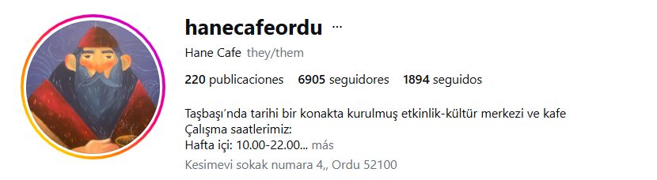

✦
Tarihi doku
Taşbaşı'nın tarihi çevresiyle bütünleşen karakterli bir konak atmosferi.

HANE CAFETarihi bir konakta; kahve, tatlı, etkinlik ve kültür için sıcak bir buluşma noktası.
Hane Cafe, Taşbaşı'nda tarihi bir konakta kurulmuş etkinlik-kültür merkezi ve kafe olarak konuklarını ağırlıyor.
Tarihi dokuyu, sakin atmosferi ve Ordu manzarasını bir araya getiren mekân; kahve molaları, buluşmalar ve özel etkinlikler için tasarlanmış bir deneyim sunuyor.
Hane Cafe'nin tarihi dokusu, deniz manzarası, sanat çalışmaları ve farklı oturma alanlarından seçilmiş fotoğraflar.

Ziyaretçi yorumlarında özellikle manzara, tarihi karakter, dekorasyon ve sakin atmosfer öne çıkıyor.
Taşbaşı'nın tarihi çevresiyle bütünleşen karakterli bir konak atmosferi.
Kahvenizi şehrin ve çevredeki doğal manzaranın eşliğinde yudumlayın.
Kafe deneyiminin yanında etkinlikler ve kültürel buluşmalar için bir merkez.
Güzel manzara, tarihi atmosfer ve sakin bir ortam.
Ziyaretçi yorumlarında öne çıkan ortak izlenimlerden biri.
Etkinlik ve kültür merkezi olarak Hane, özel buluşmalar ve organizasyonlar için de kullanılabilen bir mekân sunuyor.
* Pazar saatleri değişebilir. Güncel bilgiler için Google Maps veya Instagram duyurularını kontrol edin.